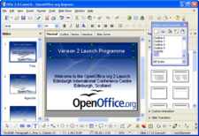

Impress
Za večjo moč vaših predstavitev
 IMPRESS je resnično izjemno orodje za ustvarjanje učinkovitih večpredstavnostnih predstavitev. Vaše predstavitve bodo izstopale z izrezki 2D in 3D, posebnimi učinki, animacijo in visoko-učinkovitimi orodji za risanje.
{kind=link}
Matrice prosojnic poenostavljajo nalogo priprave gradiv.
Podprta je elotna paleta pogledov: risalni / orisni / pogled prosojnic / opomb / izročkov, ki zadovoljivo vse potrebe predstaviteljev in občinstva, poleg tega pa tudi možnost več-delnega pogleda, da postavite vsa orodja na doseg svojih prstov.
IMPRESS ima celo paleto za uporabo enostavnih orodij za risanje slik in diagramov, namenjenih popestritvi vaših predstavitev.
'Parkirajte' svoje najpogostejše uporabljena risalna orodja okrog zaslona v pripravljenosti za dostop z enim samim klikom.
Animacija in učinki projekcije vdihnejo vašim predstavitvam življenje. Fontwork zagotavlja fantastične slike 2D in 3D iz besedila. Ustvarite realistične slike 3D z osupljivo hitrostjo in odzivnostjo.
Shranite svoje predstavitve v zapisu OpenDocument, novem mednarodnem standardu za pisarniške dokumente. Ta zapis, ki temelji na XML, pomeni, da niste omejeni zgolj na IMPRESS. Svoje predstavitve lahko uporabljate s katero koli programsko opremo, ki podpira standard OpenDocument.
Seveda lahko uporabite tudi svoje stare predstavitve Microsoft PowerPoint ali shranite svoje delo v zapisu PowerPoint za pošiljanje ljudem, ki so še vedno vpeti v izdelke Microsoft. Sicer lahko uporabite tudi v IMPRESS vgrajeno sposobnost ustvarjanja različic Flash (.swf) svojih predstavitev.
Kliknite sem za ogled demonstracije aplikacije IMPRESS v elementu.